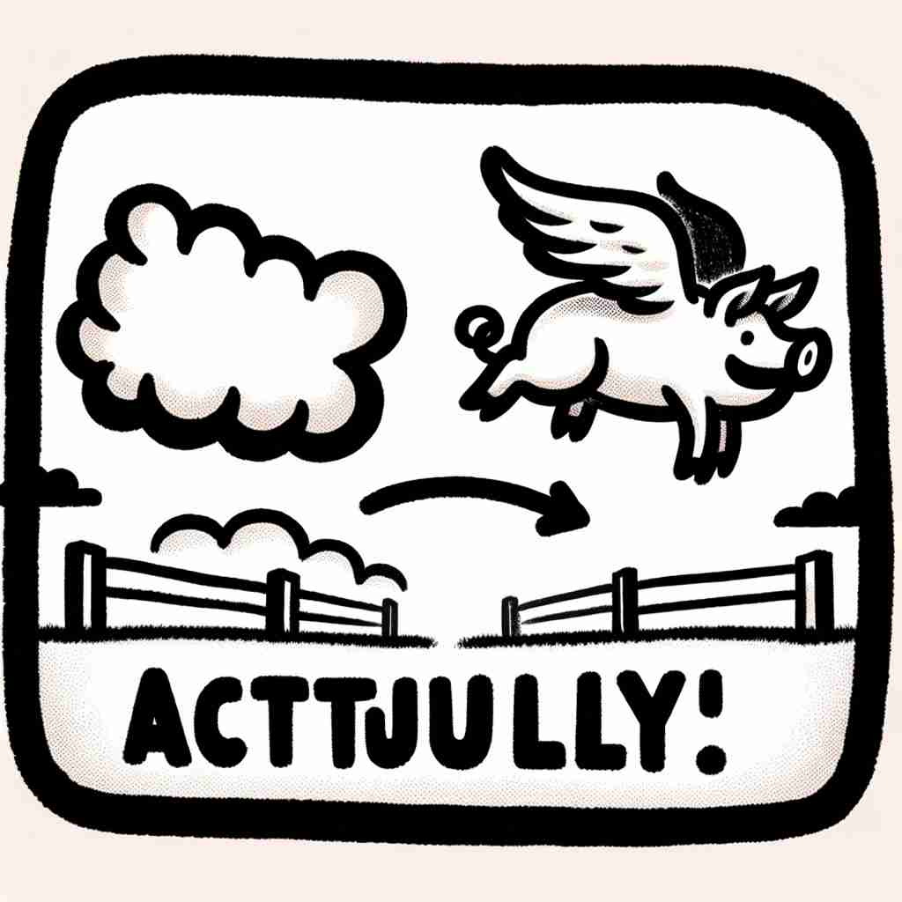

💬 He is actually enjoying the movie while his friend is bored. 他实际上在享受这部电影，而他的朋友却感到无聊。

💬 Everyone at the party actually enjoys the cake. 派对上的每个人其实都很喜欢这个蛋糕。
💬 The soup looks spicy, but it is actually not spicy at all. 这汤看起来很辣，但实际上一点都不辣。

💬 Look, it's actually a flying pig in the sky! 看看，天空中居然有一只会飞的猪！
🧠 记住'actually'的核心含义是强调真实性或准确性。想象一个放大镜，它能帮助你看清事物的真相。无论是引入新话题、表达惊讶、纠正错误还是询问确认，'actually'都在强调真实的信息，就像用放大镜仔细查看事实一样。这个心象可以帮助你更好地理解和记忆'actually'的各种用法。
🔈 [ˈæktʃuəli]
🗝️ adv. used to emphasize that something is true or exact, especially when it is surprising or when someone else has suggested it is not true 用于强调某事是真实或准确的，尤其是在令人惊讶或当其他人认为并非如此的时候。
🎭 在一个热烈讨论的餐桌上，朋友们在聊最近上映的电影。有人提到，听说主角根本不会骑马。一位朋友突然插话说：'Actually，他在电影里所有骑马的场景都是真实拍摄的，绝对没有用替身哦！' 她强调某件事的真实性让大家感到惊讶。
💬 I thought she was American, but actually she's Canadian. 我以为她是美国人，但实际上她是加拿大人。
🌳 由基本词 'actual'（真正的，实际的）加上副词后缀 '-ly' 组成，构成一个副词，表示 '事实上，实际上'。
🕸️ 1. actual: 实际的 2. actuality: 现实 3. factual: 事实的
💡 记忆 'actually' 时，可以联想到 'actual' 这个词的意思，通过加上 '-ly'，它变成了一种状态或方式，即 '事实上'，帮助记住它的用法。